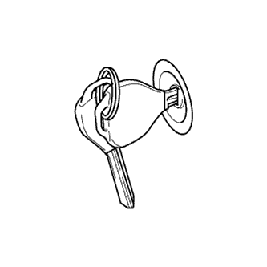
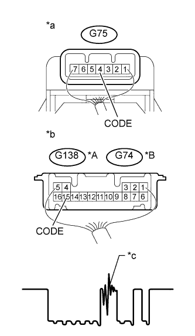

DTC B2797 Ошибка обмена данными № 1 |
| Код DTC | Условие обнаружения DTC | Неисправный участок |
| B2797 | 2 (или более) ключа зажигания располагаются слушком близко друг к другу, либо в линии связи имеются помехи. |
|
| 1.ПРОВЕРЬТЕ КЛЮЧ |
|  |
Проверьте, не находятся ли поблизости от используемого ключа зажигания другие ключи зажигания. Также проверьте, касается ли кольцо ключа его головки.
| Результат | Следующий шаг |
| Поблизости от используемого ключа находятся другие ключи, или кольцо ключа касается головки ключа. | А |
| Поблизости от используемого ключа зажигания нет других ключей, и кольцо ключа не касается головки ключа | B |
|
| ||||
| А | |
| 2.ПРОВЕРЬТЕ DTC |
Разделите ключи или снимите кольцо ключа.
Сбросьте коды DTC (Нажмите здесь).
Вставьте ключ в замок зажигания и затем извлеките его. Повторите эту операцию для всех других ключей.
Убедитесь, что коды DTC не выводятся (Нажмите здесь).
|
| ||||
| OK | ||
| ||
| 3.ПРОВЕРЬТЕ ЖГУТ ПРОВОДОВ И РАЗЪЕМ (ЭБУ ЭЛЕКТРОННОГО КЛЮЧА ЗАЖИГАНИЯ – УСИЛИТЕЛЬ ЭЛЕКТРОННОГО КЛЮЧА ЗАЖИГАНИЯ) |
Отсоедините разъем G138*1 или G74*2 ЭБУ.
Отсоедините разъем G75 блока управления.
Измерьте сопротивление в соответствии со значениями, приведенными в таблице ниже.
| Контакты для подключения диагностического прибора | Режим | Заданные условия |
| G138-15 (CODE) - G75-4 (CODE) | Всегда | Менее 1 Ом |
| G138-15 (CODE) или G75-4 (CODE) - масса | Всегда | 10 кОм или более |
| Контакты для подключения диагностического прибора | Режим | Заданные условия |
| G74-15 (CODE) - G75-4 (CODE) | Всегда | Менее 1 Ом |
| G74-15 (CODE) или G75-4 (CODE) - масса | Всегда | 10 кОм или более |
|
| ||||
| OK | |
| 4.ПРОВЕРЬТЕ ЭБУ ЭЛЕКТРОННОГО КЛЮЧА ЗАЖИГАНИЯ (ПОМЕХИ) |
|  |
С помощью осциллографа проверьте качество сигнала между контактами разъема G75 усилителя и разъема G138*1 или G74*2 ЭБУ.
| Параметр / Устройство | Описание |
| Контакты для подключения диагностического прибора | G138-4 (CODE) - G74-15 (CODE)*1 G75-4 (CODE) - G74-15 (CODE)*2 |
| Настройки прибора | 5 В/дел., 20 мс/ дел. |
| Условие | Ключ вставлен в замок зажигания |
| *A | для моделей с 2TR-FE |
| *B | для моделей с 5L-E |
| *a | Устройство с подсоединенным жгутом проводов (усилитель электронного ключа зажигания) |
| *b | Устройство с подсоединенным жгутом проводов (ЭБУ электронного ключа зажигания) |
| *c | Шум должен отсутствовать |
|
| ||||
| OK | |
| 5.ЗАМЕНИТЕ УСИЛИТЕЛЬ ЭЛЕКТРОННОГО КЛЮЧА ЗАЖИГАНИЯ |
Временно замените усилитель электронного ключа зажигания новым или исправным (Нажмите здесь).
| ДАЛЕЕ | |
| 6.ПРОВЕРЬТЕ, ЗАПУСКАЕТСЯ ЛИ ДВИГАТЕЛЬ |
Убедитесь, что двигатель запускается нормально.
|
| ||||
| OK | ||
| ||